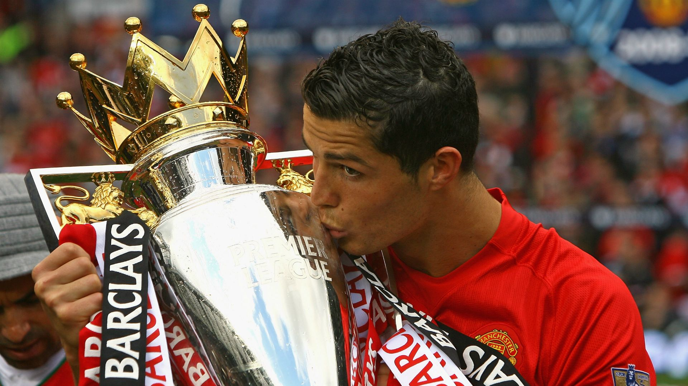
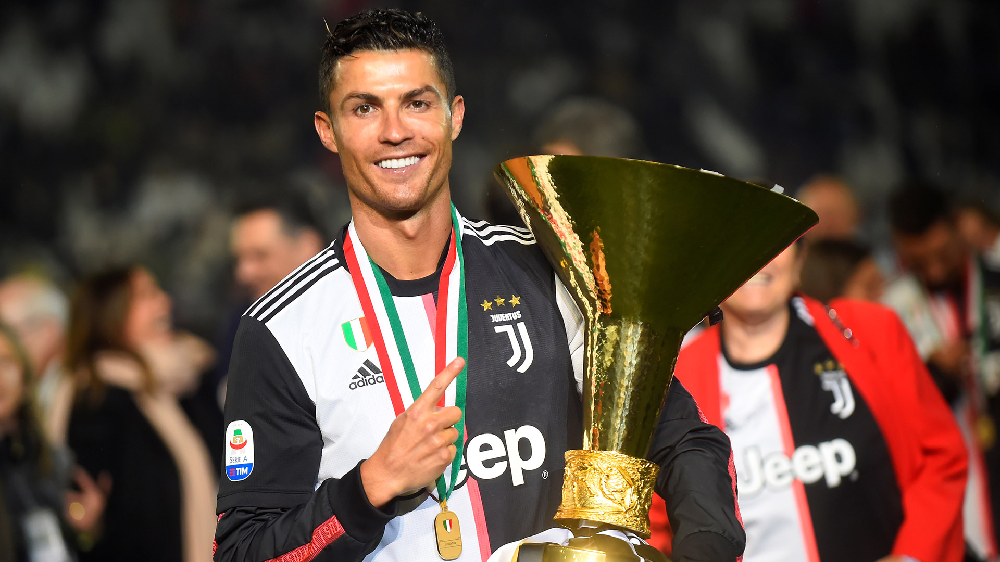
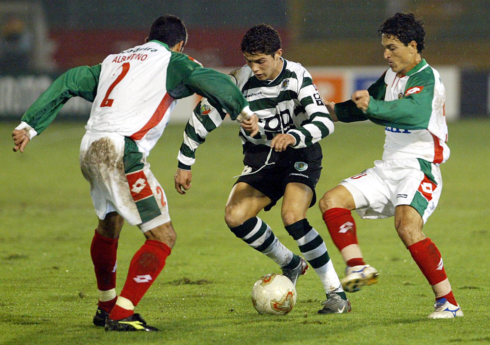

| Real Madrid | |
|
1. Etapa mas gloriosa de su carrera
Cristiano llegó al Real Madrid en 2009 y estuvo hasta 2018. Durante esos 9 años, alcanzó su máximo nivel futbolístico. Fue donde realmente se convirtió en una leyenda viva del fútbol mundial. 2. Records historicosConvirtió 450 goles en 438 partidos, siendo el máximo goleador de la historia del club. Superó récords que parecían imposibles, y lo hizo con una constancia brutal. 3. Títulos y gloria europeaGanó 4 Champions League (tres seguidas entre 2016 y 2018), además de 2 Ligas, 3 Supercopas de Europa, 3 Mundiales de Clubes, entre otros trofeos. La Champions se volvió su competencia favorita, y con el Madrid se volvió sinónimo de éxito europeo. 4. Rivalidad con MessiEn España vivió su rivalidad directa con Lionel Messi, lo que elevó su nivel al máximo. Cada partido entre Real Madrid y Barcelona era una batalla épica que marcó una era dorada en el fútbol mundial. |

|
| Manchester United | |
|
1. El trampolín al estrellato mundial
Cristiano llegó al Manchester United en 2003, cuando tenía apenas 18 añitos. Fue Sir Alex Ferguson, su "padre futbolístico", quien apostó por él y lo moldeó. En ese club pasó de ser un jugador con talento y regates, a convertirse en una máquina ganadora. 2. Sus primeros grandes títulosEn el United ganó todo lo importante a nivel de clubes en Inglaterra: -3 Premier League (2006-07, 2007-08, 2008-09) -1 Champions League (2007-08) -1 FA Cup, 2 Copas de la Liga, 1 Mundial de Clubes Ese ciclo fue la base para que en 2008 ganara su primer Balón de Oro. 3. Transformación física y mentalEn Inglaterra se volvió más fuerte física y mentalmente. Aprendió a jugar en equipo, a ser más eficaz y a rendir bajo presión. Se curtió en la Premier, una liga durísima, y eso lo preparó para brillar después en el Real Madrid. 4. Regreso con amor (2021)Volvió en 2021 con toda la ilusión de los hinchas, y aunque el club no estaba en su mejor momento, Cristiano seguía marcando goles importantes. Su regreso fue un acto de cariño a los Red Devils y una muestra de que el United siempre fue especial para él. |
 |
| Juventus | |
|
1. El trampolín al estrellato mundial
Cristiano llegó al Manchester United en 2003, cuando tenía apenas 18 añitos. Fue Sir Alex Ferguson, su "padre futbolístico", quien apostó por él y lo moldeó. En ese club pasó de ser un jugador con talento y regates, a convertirse en una máquina ganadora. 2. Sus primeros grandes títulosEn el United ganó todo lo importante a nivel de clubes en Inglaterra: -3 Premier League (2006-07, 2007-08, 2008-09) -1 Champions League (2007-08) -1 FA Cup, 2 Copas de la Liga, 1 Mundial de Clubes. Ese ciclo fue la base para que en 2008 ganara su primer Balón de Oro. 3. Transformación física y mentalEn Inglaterra se volvió más fuerte física y mentalmente. Aprendió a jugar en equipo, a ser más eficaz y a rendir bajo presión. Se curtió en la Premier, una liga durísima, y eso lo preparó para brillar después en el Real Madrid. 4. Regreso con amor (2021)Volvió en 2021 con toda la ilusión de los hinchas, y aunque el club no estaba en su mejor momento, Cristiano seguía marcando goles importantes. Su regreso fue un acto de cariño a los Red Devils y una muestra de que el United siempre fue especial para él. |
 |
| Sporting de Lisboa | |
|
1. Donde todo empezó
Cristiano debutó profesionalmente en el Sporting de Lisboa en 2002. Con solo 17 años, ya mostraba un talento descomunal. Fue en el José Alvalade donde el mundo lo vio por primera vez. 2. Su explosión ante el ManchesterEn un partido amistoso entre el Sporting y el Manchester United, Cristiano dejó tan impresionados a los ingleses que lo ficharon inmediatamente. Esa noche cambió su vida para siempre. 3. Juventud con carácterEn Portugal se formó como futbolista, pero también como persona. Su disciplina, carácter competitivo y hambre de éxito se forjaron desde joven en el Sporting. 4. Orgullo de canteraEl Sporting siempre se ha sentido orgulloso de haber formado a uno de los mejores jugadores de la historia. Su legado allí sigue vivo y es inspiración para muchos jóvenes. |
 |